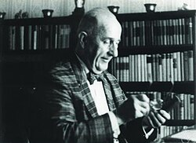

Carl Ludwig Siegel | |
|---|---|
 Carl Ludwig Siegel in 1975 | |
| Born | 31 December 1896 |
| Died | 4 April 1981 (aged 84) |
| Alma mater | University of Göttingen |
| Known for | E-function Siegel disk Siegel domain Siegel G-function Siegel modular form Siegel modular variety Siegel parabolic subgroup Siegel zero Siegel upper half-space Siegel's conjecture Siegel's lemma Siegel's identity Siegel's number Siegel's theorem Siegel's theorem on integral points Siegel–Shidlovsky theorem Siegel–Walfisz theorem Siegel–Weil formula Brauer–Siegel theorem Riemann–Siegel formula Riemann–Siegel theta function Thue–Siegel–Roth theorem Smith–Minkowski–Siegel mass formula |
| Awards | Wolf Prize (1978) ICM Speaker (1936) |
| Scientific career | |
| Fields | Mathematics |
| Institutions | Johann Wolfgang Goethe-Universität Institute for Advanced Study |
| Edmund Landau | |
Doctoral students | |
Carl Ludwig Siegel (31 December 1896 – 4 April 1981) was a German mathematician specialising in analytic number theory. He is known for, amongst other things, his contributions to the Thue–Siegel–Roth theorem in Diophantine approximation, Siegel's method,[1] Siegel's lemma and the Siegel mass formula for quadratic forms. He has been named one of the most important mathematicians of the 20th century.[2][3]
André Weil, without hesitation, named[4] Siegel as the greatest mathematician of the first half of the 20th century. Atle Selberg said of Siegel and his work:
He was in some ways, perhaps, the most impressive mathematician I have met. I would say, in a way, devastatingly so. The things that Siegel tended to do were usually things that seemed impossible. Also after they were done, they still seemed almost impossible.
Siegel was born in Berlin, where he enrolled at the Humboldt University in Berlin in 1915 as a student in mathematics, astronomy, and physics. Amongst his teachers were Max Planck and Ferdinand Georg Frobenius, whose influence made the young Siegel abandon astronomy and turn towards number theory instead. His best-known student was Jürgen Moser, one of the founders of KAM theory (Kolmogorov–Arnold–Moser), which lies at the foundations of chaos theory. Other notable students were Kurt Mahler, the number theorist, and Hel Braun who became one of the few female full professors in mathematics in Germany.
Siegel was an antimilitarist, and in 1917, during World War I he was committed to a psychiatric institute as a conscientious objector. According to his own words, he withstood the experience only because of his support from Edmund Landau, whose father had a clinic in the neighborhood. After the end of World War I, he enrolled at the University of Göttingen, studying under Landau, who was his doctoral thesis supervisor (PhD in 1920). He stayed in Göttingen as a teaching and research assistant; many of his groundbreaking results were published during this period. In 1922, he was appointed professor at the Goethe University Frankfurt as the successor of Arthur Moritz Schönflies. Siegel, who was deeply opposed to Nazism, was a close friend of the docents Ernst Hellinger and Max Dehn and used his influence to help them. This attitude prevented Siegel's appointment as a successor to the chair of Constantin Carathéodory in Munich.[5] In Frankfurt he took part with Dehn, Hellinger, Paul Epstein, and others in a seminar on the history of mathematics, which was conducted at the highest level. In the seminar they read only original sources. Siegel's reminiscences about the time before World War II are in an essay in his collected works.
In 1936 he was a Plenary Speaker at the ICM in Oslo. In 1938, he returned to Göttingen before emigrating in 1940 via Norway to the United States, where he joined the Institute for Advanced Study in Princeton, where he had already spent a sabbatical in 1935. He returned to Göttingen after World War II, when he accepted a post as professor in 1951, which he kept until his retirement in 1959. In 1968 he was elected a foreign associate of the U.S. National Academy of Sciences.[6]
Siegel's work on number theory, diophantine equations, and celestial mechanics in particular won him numerous honours. In 1978, he was awarded the first Wolf Prize in Mathematics, one of the most prestigious in the field. When the prize committee decided to select the greatest living mathematician, the discussion centered around Siegel and Israel Gelfand as the leading candidates. The prize was ultimately split between them.[7]
Siegel's work spans analytic number theory; and his theorem on the finiteness of the integer points of curves, for genus > 0, with the case of genus 1 an earlier paper in his collected works, is historically important as a major general result on diophantine equations, when the field was essentially undeveloped. The methods included those Weil used in his thesis on finite generation of rational points on abelian varieties (a thesis much guided by Siegel) and versions of the famous Thue-Siegel-Roth Theorem on diophantine approximation. [8] has a detailed discussion of the history. He worked on L-functions, discovering the (presumed illusory) Siegel zero phenomenon. His work, derived from the Hardy–Littlewood circle method on quadratic forms, appeared in the later, adele group theories encompassing the use of theta-functions. The Siegel modular varieties, which describe Siegel modular forms, are recognised as part of the moduli theory of abelian varieties. In all this work the structural implications of analytic methods show through.
In the early 1970s Weil gave a series of seminars on the history of number theory prior to the 20th century and he remarked that Siegel once told him that when the first person discovered the simplest case of Faulhaber's formula then, in Siegel's words, "Es gefiel dem lieben Gott." (It pleased the dear Lord.) Siegel was a profound student of the history of mathematics and put his studies to good use in such works as the Riemann–Siegel formula, which Siegel found[9] while reading through Riemann's unpublished papers.
by Siegel:
about Siegel:
{kind=link}